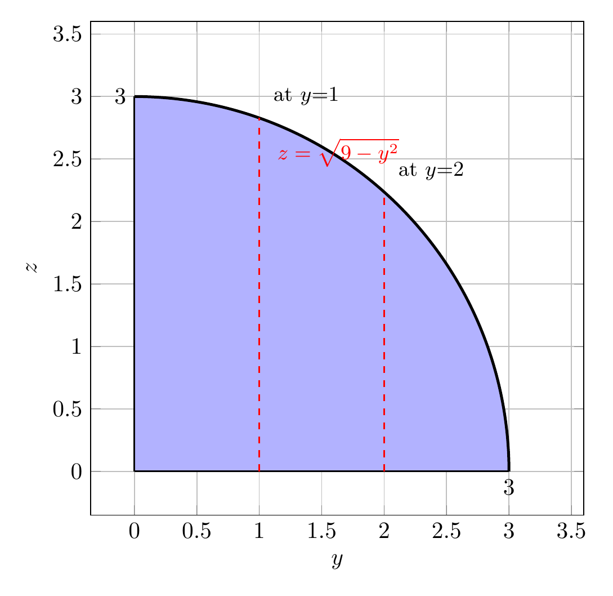

Please solve the problem in the following image.
(Image `20260928_150144_941798_utc_0800_0.png`. Alt text: Image: human_20260928_150144_941798_utc_0800)
20260928_150144_941798_utc_0800_0.png
End of problem
Answer
## Problem setup — describing the solid $E$
The solid sits in the first octant ($x,y,z\ge 0$). The boundaries are
- the cylinder $y^2+z^2=9$ (we stay **inside** it),
- the plane $y=3x$, i.e. $x=y/3$,
- the plane $x=0$ (the coordinate plane),
- the plane $z=0$.
Combining them, the region is
$$
E:\quad 0\le y\le 3,\qquad 0\le z\le \sqrt{9-y^2},\qquad 0\le x\le \frac{y}{3},
$$
with density $\rho(x,y,z)=x^2+y^2$. The curved **roof** of $E$ is the cylindrical surface $z=\sqrt{9-y^2}$.
---
pgfplots_0.png
---
### Slicing view
For a **fixed $y$**, the cross-section of $E$ parallel to the $xz$-plane is a *rectangle*:
$$
0\le x\le \frac{y}{3},\qquad 0\le z\le \sqrt{9-y^2}.
$$
The projection onto the $xy$-plane (the face $z=0$) is the triangle $0\le x\le y/3,\ 0\le y\le 3$, while the projection onto the $yz$-plane is the quarter disk $y^2+z^2\le 9,\ y,z\ge 0$.
---
\documentclass[border=8pt]{standalone}
\usepackage{pgfplots}
\pgfplotsset{compat=1.18}
\begin{document}
\begin{tikzpicture}
\begin{axis}[
width=9cm, height=9cm,
xlabel=$y$, ylabel=$z$,
xmin=-0.35, xmax=3.6, ymin=-0.35, ymax=3.6,
trig format plots=deg, grid=major, axis equal,
]
% filled quarter disk
\addplot[fill=blue!30, draw=none, domain=0:90, samples=200] ({3*cos(x)},{3*sin(x)}) \closedcycle;
% cylinder arc
\addplot[very thick, black, domain=0:90, samples=200] ({3*cos(x)},{3*sin(x)});
\addplot[thick, black, domain=0:3, samples=2] ({x},{0});
\addplot[thick, black, domain=0:3, samples=2] ({0},{x});
% constant-y slices : z from 0 to sqrt(9-y^2)
\addplot[thick, dashed, red, domain=0:2.828, samples=2] ({1},{x});
\addplot[thick, dashed, red, domain=0:2.236, samples=2] ({2},{x});
\node[red, font=\small, anchor=west] at (axis cs:1.08,2.55) {$z=\sqrt{9-y^2}$};
\node[anchor=west] at (axis cs:2.05,2.4) {\small at $y{=}2$};
\node[anchor=west] at (axis cs:1.05,3.0) {\small at $y{=}1$};
\node[anchor=north] at (axis cs:3,0) {$3$};
\node[anchor=east] at (axis cs:0,3) {$3$};
\end{axis}
\end{tikzpicture}
\end{document}

pgfplots_2.png
---
## (a) The mass
$$
M=\iiint_E \rho\,dV=\int_0^3\!\!\int_0^{\sqrt{9-y^2}}\!\!\int_0^{y/3}(x^2+y^2)\,dx\,dz\,dy.
$$
**Inner $x$-integral:**
$$
\int_0^{y/3}(x^2+y^2)\,dx=\frac{(y/3)^3}{3}+y^2\!\left(\frac{y}{3}\right)=\frac{y^3}{81}+\frac{y^3}{3}=\frac{28y^3}{81}.
$$
**Middle $z$-integral** just multiplies by $\sqrt{9-y^2}$. For the **$y$-integral** substitute $y=3\sin t$ ($dy=3\cos t\,dt$), so $\sqrt{9-y^2}=3\cos t$:
$$
M=\frac{28}{81}\int_0^3 y^3\sqrt{9-y^2}\,dy
=\frac{28}{81}\cdot 3^{5}\int_0^{\pi/2}\sin^3 t\cos^2 t\,dt
=\frac{28}{81}\cdot 243\cdot\frac{2}{15}=\frac{56}{5}.
$$
$$
\boxed{M=\frac{56}{5}=11.200}
$$
---
## (b) The center of mass
The coordinates are $\bar x=\dfrac{1}{M}\iiint x\rho\,dV,\ \ \bar y=\dfrac{1}{M}\iiint y\rho\,dV,\ \ \bar z=\dfrac{1}{M}\iiint z\rho\,dV$.
**$x$-moment.** The inner integral gives $\int_0^{y/3}x(x^2+y^2)\,dx=\dfrac{19y^4}{324}$, hence
$$
\iiint x\rho\,dV=\frac{19}{324}\int_0^3 y^4\sqrt{9-y^2}\,dy
=\frac{19}{324}\cdot 3^{6}\cdot\frac{\pi}{32}=\frac{171\pi}{128},
$$
$$
\bar x=\frac{171\pi/128}{56/5}=\frac{855\pi}{7168}\approx 0.37473\;\to\;0.375.
$$
**$y$-moment.** Since $\int_0^{y/3}y(x^2+y^2)\,dx=\dfrac{28y^4}{81}$,
$$
\iiint y\rho\,dV=\frac{28}{81}\cdot 3^{6}\cdot\frac{\pi}{32}=\frac{63\pi}{8},\qquad
\bar y=\frac{63\pi/8}{56/5}=\frac{315\pi}{448}=\frac{45\pi}{64}\approx 2.20893\;\to\;2.209.
$$
**$z$-moment.** $\int_0^{y/3}z(x^2+y^2)\,dx=\dfrac{28y^3}{81}z$, and $\int_0^{\sqrt{9-y^2}}z\,dz=\dfrac{9-y^2}{2}$, so
$$
\iiint z\rho\,dV=\frac{14}{81}\int_0^3 y^3(9-y^2)\,dy=\frac{14}{81}\left(9\cdot\frac{81}{4}-\frac{729}{6}\right)=\frac{21}{2},
$$
$$
\bar z=\frac{21/2}{56/5}=\frac{15}{16}=0.9375\;\to\;0.938.
$$
$$
\boxed{\;\bar x\approx0.375,\quad \bar y\approx2.209,\quad \bar z\approx0.938\;}
$$
---
## (c) The moment of inertia about the $z$-axis
The distance from a point to the $z$-axis is $r=\sqrt{x^2+y^2}$, so
$$
I_z=\iiint_E (x^2+y^2)\,\rho\,dV=\iiint_E (x^2+y^2)^2\,dV.
$$
**Inner $x$-integral:**
$$
\int_0^{y/3}\!\big(x^4+2x^2y^2+y^4\big)\,dx
=\frac{(y/3)^5}{5}+\frac{2y^2(y/3)^3}{3}+y^4\frac y3
=y^5\!\left(\frac{1}{1215}+\frac{2}{81}+\frac13\right)=\frac{436y^5}{1215}.
$$
Now multiply by $\sqrt{9-y^2}$ and integrate, again with $y=3\sin t$:
$$
I_z=\frac{436}{1215}\int_0^3 y^5\sqrt{9-y^2}\,dy
=\frac{436}{1215}\cdot 3^{7}\cdot\frac{8}{105}
=\frac{436}{1215}\cdot\frac{5832}{35}=\frac{10464}{175}.
$$
$$
\boxed{I_z=\frac{10464}{175}\approx 59.794}
$$
---
## Final answers (three decimal places)
$$
\boxed{\;\text{(a) } M=11.200\qquad \text{(b) } (\bar x,\bar y,\bar z)=(0.375,\,2.209,\,0.938)\qquad \text{(c) } I_z=59.794\;}
$$
**Key takeaways.** For triple integrals on a region carved out by planes and a cylinder, choose the integration order so the limits are as simple as possible: here fixing $y$ gives a rectangular $xz$-cross-section ($0\le x\le y/3,\ 0\le z\le\sqrt{9-y^2}$). Each of mass, center of mass and moment of inertia is then the same integral with an extra factor ($1$, $x/y/z$, and $x^2+y^2$ respectively) in the integrand, and the cylindrical roof is best handled with the substitution $y=3\sin t$.